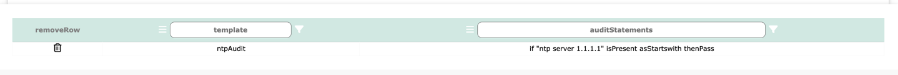
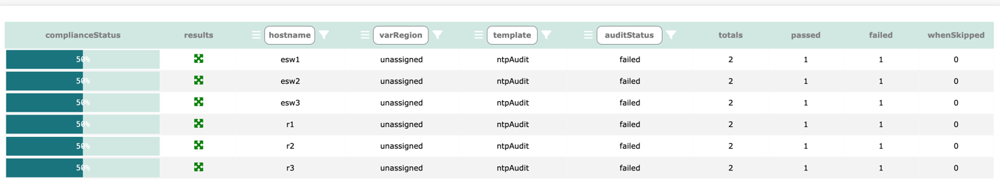

Log into Network Vista, open the menu (top left), select infra then Compliance Audit
techTip: Some feature within the audit module are restricted root, admin and sudo admin users
Before starting, please confirm that Network Vista is Collect Configuration Db enabled.
Once confirmed and the Network Vista collection process has completed, following these steps
 DashBoard Summary Page
DashBoard Summary Page
 Table Results Page
Table Results Page
 Device Level Results Page
Device Level Results Page
 Input Device Variables
Input Device Variables
Audit Template builder
Template and Variable assignment
The Audit template build is where we create test templates which will be used to audit the configuration files.

In this example, I will be creating a test that will confirm that my NTP servers are set up correctly.
In this example, my template name is ntpAudit, and I am validating that ntp server 1.1.1.1 is present across all devices.

Once ready, click the save button 

Next, click on Template and Variable assignment
Select the devices which should use this audit test template. In this example, all devices will be enabled.
techTip: Click the filter button in the column to enable or disable all items within the column, then to disable the filter, click

If needed, this table can reverted back to the last save, click ** restore ** 

Last step is to navigate to the Table Results Page and push the start arrow button 

Results will be display once processing completes.
Reading the result, 50% of the devices failed. This is due to these devices using a different NTP source 2.2.2.2. I could place another test under ntpAudit however, this would still result in a 50% failure.
As expected

To resolve this, we must use regional vars. Regional Vars (or variables) are values which are swapped out depending on device locations.
navigate to Input Device Variables

Start by unlocking the table 
To add another row, click . To remove a row, click then the trash button on the row that needs to be removed 
Once ready, click and Save . Nagiavte back to the Audit Template builder
Remove the two existing tests by click the trash icon.
Instead of enter ntp server 1.1.1.1, this time I enter ntp server {ntpOne}. The top right information box will display errors.
Click Save
Navigate back to the Template and Variable assignment .
NOTE: Since I removed the two existing audit tests before I added the new regional var rule, all devices were unassigned. To maintain assessment, it is best to add then remove audit tests.
techTip: devices can only be assigned to one region at a time but can belong to one or more audit templates

Navigate back to the Table Results Page and restart the test.
everything is passing

Navigate back to the Device Level Results Page
We can see that the keyVar has been replaced with the keyValue.
Another useful feature of the compliance audit tool is if/when condition:
Whenever a when statement is used, the logic that Network Vista will apply is, if the condition is not met, skip conditions two and three (if provided).
This does not affect the overall audit score of a device.
In this example, any device which has OSPF enabled must log adjacency changes (log-adjacency-changes)
Navigate back to the Table Results Page and restart the test.

Five Skips and One Pass, as expected
Click on the results icon  to see device level results
to see device level results
Navigate back to the DashBoard Summary Page
techTip: Each device summary ring is hyperlinked, click on the device to see a detail view of the audit results